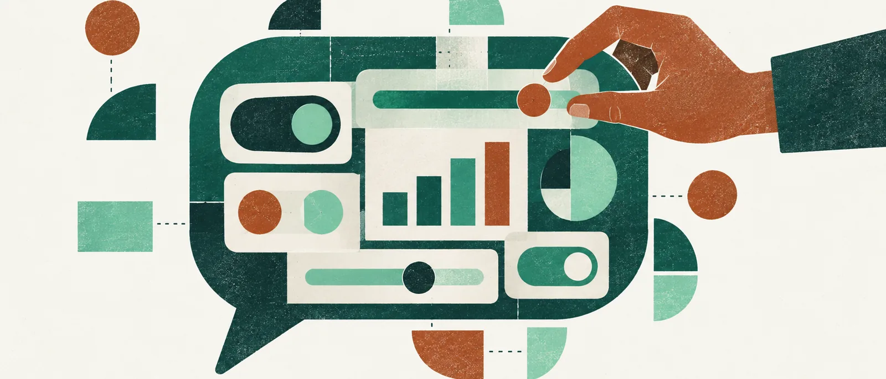

AI 인사이트 · 해설
ChatGPT가 만든 화면에서 사용자는 무엇을 고를 수 있을까요
설명을 읽는 데서 값을 바꾸며 살펴보는 쪽으로 대화가 넓어집니다. 화면이 제시하는 선택과 그 뒤의 계산을 함께 이해할 수 있는지가 중요해졌습니다.
모임 비용을 나눌 때 인원수가 달라질 때마다 다시 질문하는 대신, 숫자를 바꾸며 각자의 금액을 볼 수 있다면 어떨까요. OpenAI가 10월 7일 발표한 Intelligent UI는 이런 상호작용을 ChatGPT 답변 안에 넣는 기능입니다. GPT-6가 질문에 맞춰 글과 시각 자료, 버튼, 입력창, 차트를 구성합니다. 사용자는 완성된 설명을 읽는 데서 한 걸음 더 나아가, 조건을 바꾸고 결과를 살펴볼 수 있습니다. 글로 된 답변도 여전히 선택지로 남습니다.
공식 발표에는 비용 나누기 도구와 저축 계산기, 조작하면서 배우는 설명, 게임 등이 나옵니다. 이는 회사가 제시한 사례입니다. 이 글에서 직접 실행해 정확도나 사용성을 확인한 결과는 아닙니다. 특히 저축 계산기의 보기 좋은 그래프가 미래의 수익을 보장하지는 않습니다. 어떤 수익률을 가정했는지, 입력값을 바꾸면 무엇이 달라지는지를 읽을 수 있어야 화면이 판단을 돕습니다.
이번 변화에서 눈여겨볼 부분은 AI가 답변 내용뿐 아니라 사용자가 손댈 수 있는 부분까지 정한다는 점입니다. 비용 도구에 총액과 인원수만 있으면 균등 분담을 탐색하기 쉽습니다. 서로 다른 금액을 부담하려는 경우에는 다른 입력 방식이 필요합니다. 이는 특정 제품 결함을 확인했다는 뜻이 아니라, 화면의 선택지가 질문의 범위를 좁힐 수 있다는 설명입니다. 편리한 기본값을 받아들이기 전에 내 상황에 필요한 조건이 빠지지 않았는지 살필 이유가 있습니다.
OpenAI는 준비된 화면 구성 요소와 이를 화면으로 바꾸는 컴파일러를 사용해, 답변이 생성되는 동안 요소들을 차례로 보여 준다고 설명합니다. 화면의 명료함과 유용성, 완결성을 학습·평가 대상으로 삼았지만 디자인 판단에는 개선할 여지가 있다고도 밝혔습니다. 사용자는 매번 빈 화면부터 설계할 필요가 줄어들 수 있습니다. 다만 움직이는 버튼과 정돈된 배치만으로 계산이나 설명의 정확성까지 확인되는 것은 아닙니다.
처음 써 본다면 답을 이미 아는 작은 문제를 권합니다. “모임 비용을 나누는 도구를 만들고, 총액과 인원수를 바꾸게 해 주세요. 계산식과 반올림 기준도 보여 주세요”라고 요청해 보는 것입니다. 3만 원을 3명이 나누면 1만 원, 4명이면 7,500원인지 확인합니다. 인원에 0을 넣었을 때는 불가능한 입력이라는 설명을 주는지도 살펴볼 수 있습니다. 이 절차는 이 글의 검증 제안이며, 제품에서 확인한 동작이나 보장된 기능 목록은 아닙니다.
결과가 납득되지 않을 때 무엇을 물으면 좋을까요. “지금 계산에 쓴 가정을 글로 풀어 주세요”, “내가 바꿀 수 없는 값도 알려 주세요”처럼 화면 밖의 설명을 요청할 수 있습니다. 어떤 조건을 고를지 사람이 정하려면 선택의 근거가 보여야 하기 때문입니다. 같은 이유로, 작은 실험이 잘됐다는 사실을 큰 금액이 걸린 판단이나 복잡한 업무 전체에 대한 검증으로 넓혀 받아들이지는 않는 편이 좋겠습니다.
배포는 단계적으로 진행됩니다. 공식 안내상 10월 7일부터 Plus·Pro·Business·Enterprise의 Chat 탭에 전 세계 배포를 시작하며, Free·Go 확대는 10월 8일부터 시작합니다. 시작일이 모든 계정에서 즉시 쓸 수 있다는 뜻은 아닙니다. Enterprise에서는 직장 관리자의 설정도 영향을 줍니다. 이번 발표는 Work나 Codex를 구동하는 모델을 바꾸는 업데이트가 아닙니다.
2024년 10월 발표된 Canvas가 글과 코드를 함께 고치는 별도 작업 공간에 초점을 맞췄다면, 이번에는 일상적인 답변 자체가 조작할 수 있는 화면으로 넓어집니다. 앞으로 살펴볼 기준도 조금 달라집니다. 원하는 결과를 빨리 보여 주는지와 함께, 사용자가 그 결과가 나온 이유를 이해하고 조건을 바꾸거나 다른 설명 방식을 요구할 수 있는지 보려 합니다. 화면을 다룰 수 있다는 편리함이 판단할 여지까지 넓혀 주는지 확인할 차례입니다.
배포와 기술 설명 더 읽기
- 공식 안내는 유료 Chat에 GPT-6 Sol, Free·Go에 Luna를 사용한다고 설명합니다. 실제 계정별 제공 여부를 점검한 자료는 아닙니다.
- 발표는 스트리밍 가능한 네이티브 구성 요소 라이브러리와 컴파일러를 설명합니다. 이를 임의 코드의 무제한 실행, 공개 개발 도구, 웹사이트 배포 또는 외부 서비스 작업 권한으로 확대해 읽을 근거는 없습니다.
- 이 자료만으로는 도구의 반복 사용 신뢰도, 저장·내보내기, 접근성 지원 범위를 판단할 수 없습니다.
- Canvas 비교는 2024년 최초 발표를 바탕으로 한 제품 방향의 비교입니다. Intelligent UI가 Canvas를 대체한다거나 같은 구현을 사용한다는 뜻은 아닙니다.
출처와 날짜
발표·배포 날짜는 공식 글의 표기를 따릅니다. 한국 시간으로 환산한 정확한 배포 시각을 뜻하지 않습니다.
- OpenAI, GPT-6 및 Intelligent UI 공식 발표, 2026-10-07: https://openai.com/index/gpt-6-for-everyone/
- OpenAI, Canvas 최초 발표, 2024-10-03: https://openai.com/index/introducing-canvas/
가상 편집자 코멘트
입력창이 생기면 사용자는 답을 읽는 데서 조건을 고르는 쪽으로 움직입니다. 이 글은 그 선택지가 충분한지, 계산의 가정까지 살펴볼 수 있는지를 묻습니다. 화면의 편리함을 직접 확인할 작은 시험도 함께 제안합니다.